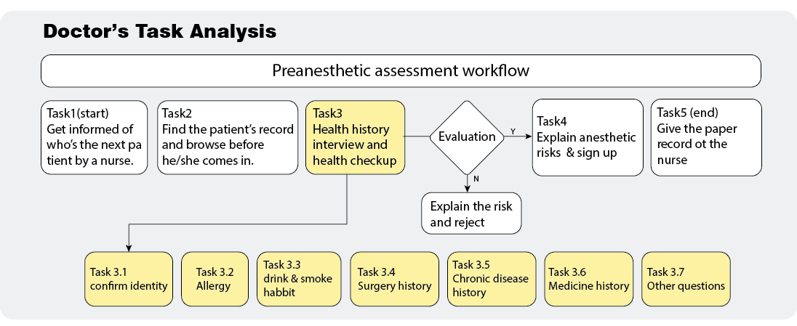
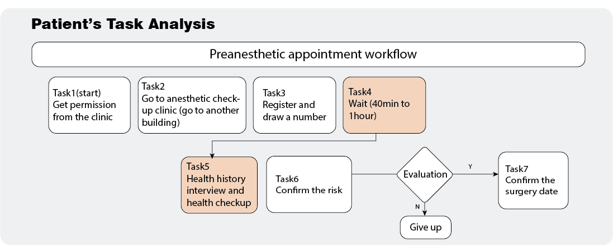
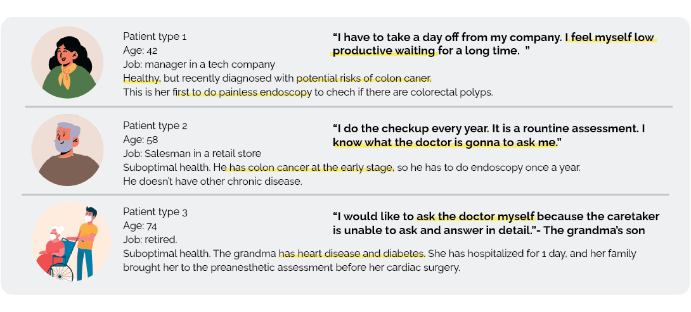
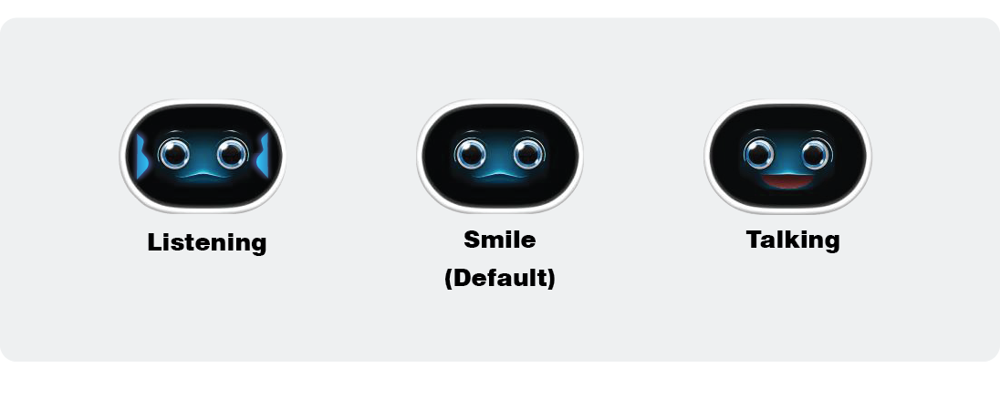
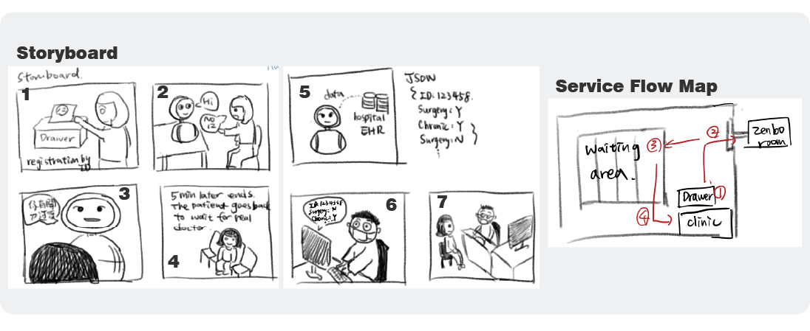
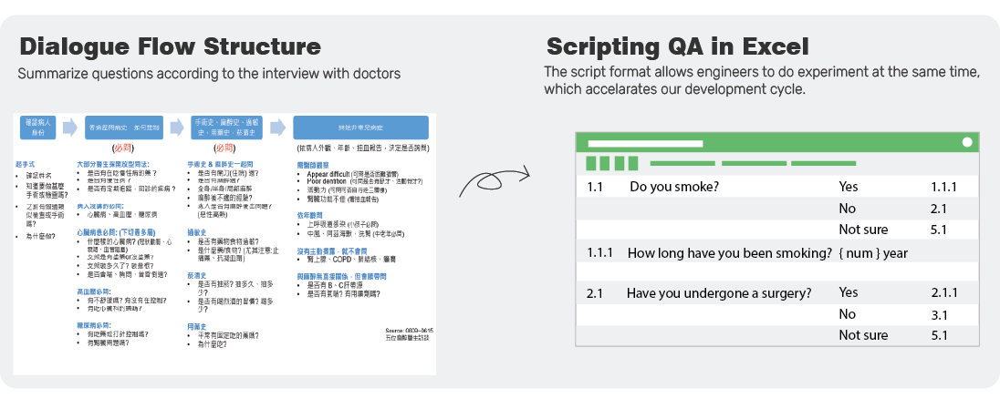
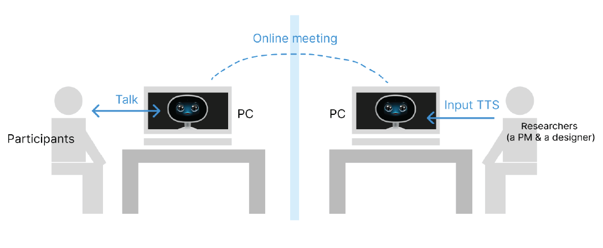
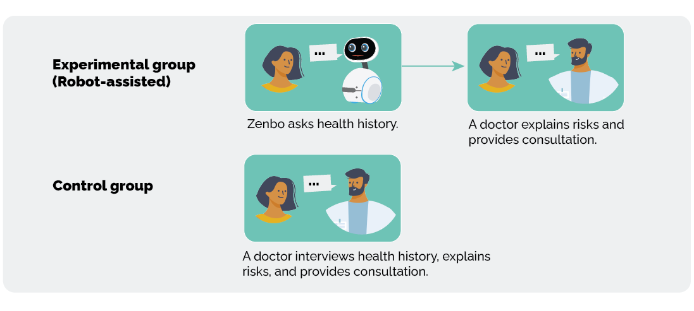

Challenge - Patients Overloaded
VGH is a first-class medical center in Taipei, Taiwan. An anesthesiologist takes care of 50 ~ 80 clinic patients for preanesthetic assessment in 3 hours on average, which means a doctor has to finish a checkup per patient in 2.5 minutes. What’s more, since the preanesthetic assessment documentation hasn’t been digitalized, doctors have to quickly record as they speak to the patient, which led to patients’ dissatisfaction. Due to the overloading patient numbers, each patient should wait for 40 minutes to 1 hour, but take the assessment shortly, leading to patients’ complaints.
User Research
To investigate the current workflow in hospital, I invited doctors who participated in this project and our colleagues who have done the assessment in this hospital.
On doctors' side, I interviewed 8 anesthesiologists to understand their current assessment flow and questions. After the interview, I visualized doctor’s assessment workflow chart.
Task 3 (yellow block) is the routin assessment QA that doctors agreed that it can be asked first by the service robot.
On patients' side, I interviewed staff in the hospital and two of my colleagues with preanesthetic assessment experience to understand appointment flow and explore what different types of patients care about. I visualized their experiences into a user journey chart, and I found task 4 and task 5 (orange block) - medical history inquiry, which consisted of fixed questions with a certain sequence, were two steps where Zenbo could provide assistance.
From user interviews, field observation, and collecting experience from hospital staff, I summarized three types of patients according to their health status - (1) the middle-aged with potential cancer risk, (2) the middle-aged with controllable cancer and requires periodical checkups, (3) elderly with complex conditions. Since the robot’s dialogue engine was designed to recognize Chinese, we excluded patient type 3 out of our first target audience in this project.
From the user research, I found that most patients preferred a more efficient and customized assessment. However, in the current assessment, doctors had to ask them the routine medical history questions before giving a more detailed consultation, so how to help doctors focus on giving personalized investigation and suggestions in a short time becomes a key for improving the efficiency and patient experience. This also turns out to be an opportunity for Zenbo.
Problem Statement
Through the user interview, I narrowed down the problems into three.
1. How to reduce patients’ unsatisfaction while waiting?
2. How to help doctors focus on complex patients?
3. How to seemlessly store the assessment results into the hospital system?
Design process
Phase 1: Role & Function Design
In this project we used ASUS service robot, Zenbo Junior, as the intervention. Zenbo features its conversational engine, so I proposed Zenbo could either play as a doctor or an assistant; however, after discussing with our hospital client, due to medical legistration concerns, Zenbo should be an assistant that doesn’t provide prescription. The main task of Zenbo is to ask the routine 12 medical history questions, and the human doctors would focus on explaining anesthetic risks. In terms of facial expression, since most of patients are middle-age adults, I selected a friendly smily face, and a professional female tone as the robot’s voice, as shown below.
Phase 2: Human-Robot Cooperation Flow
How to embed Zenbo in the current assessment workflow is one of the challenging part in this project. After user interviews, I drew a storyboard to help our in-house teams understand the clinic environment, as shown in the below left hand picture. Considering Zenbo’s voice recognition quality and patients’ privacy, I suggested placing Zenbo in an individual room. After several times of negociation, the hospital staff and I designed a service flow that can make Zenbo’s room closer to the clinic, as shown in the below right picture.
Phase 3: Dialogue Flow Design
Based on the current assessment questionnaire, I interviewed 8 anesthesiologists how they ask patients their medical history, and finally summarized the questions into a flow.
To verify the user experience of the dialogue design at a low cost, I invited four colleagues who have experienced pre-anesthesia checkups in that hospital to join the Wizard of OZ test. I invited colleagues to speed up our dailogue flow test and make adjustment quickly.

From the pilot study, participants indicated that the robot
didn’t have follow-up questions, which seemed unnatural.
According to the feedback, I added ‘follow-up’ function on the dialogue flow.
Under this new structure, when a patient said he/she has diabetes,
the robot can jump to related follow-up questions.
The wizard of OZ test also helps strengthen the error handling mechanism -
if the robot cannot understand the patient’s answer,
it will ask again in another way,
but if the robot still cannot get the answer after three times,
the robot will leave the answer blank with a mark,
and this question will be asked by the human doctor.
Evaluation
The main purpose of the field study is to investigate
whether the robot-assisted assessment can improve patients’ satisfaction.
After reading Hepner et al.’s study, I designed a between-subject experiment.
The participants were randomly assigned into two groups -
the robot-assisted group or the control group.
The advantage of experiment is that it’s clear to provide insights
for hospital directors to compare before-after difference.
However, due to Covid-19, we didn’t achieve the expected
numbers of participants, which should be 30 people per group.
Only 27 patients were recruited in total. 16 participants were
interviewed by Zenbo and a real doctor, and 11 participants
were control group who were interviewed by the doctor.
After the experiment, I interviewed the robot-assisted group
about their interaction with the robot.

Results
Descriptive Analysis
Since the number of participants hasn’t reached statistic significance, I adopted descriptive analysis and explored more insights from user interviews.
The robot-assisted group spent 2’56 minutes for assessment on average,
which was more than the control group by almost 1 minute.
This was caused by longer medical history interview by Zenbo,
which took almost 2 minutes.
Though the robot-assisted group got a bit lower average satisfaction
than the control group, the score is still high with 4.56 out of 5.
The result indicates a positive sign of using robot in the clinic.
Patients were served for longer time on personal medical history interview
with the robot, and still remained highly satisfied.
Qualitative Analysis
From the user interview, I summarized the following insights:
1. Patients are more willing to speak more with the robot.
I talked more to Zenbo... because it is a robot, I felt relaxed to share (my medical history). -(Female, aged 42, patient type 2).2. Doctors can ask more detailed based on Zenbo’s assessment.
One patient has hyperthyroidism, and it was recorded by Zenbo, so I can directly ask more detailed about the patient’s current situation. -(Dr. Ke)3.Patients were concerned whether Zenbo understood their answer.
In the question about smoking habit, I answered “No” for three times, but the robot kept asking again. I was confused until it moved on to the next question. I wonder whether he could understand or not. -(Male, Aged 57, patient type 1)
Reflections & Next step
From the result, both patients and doctors revealed positive
feedback to Zenbo’s assistance. I am also impressed that Zenbo’s
cuteness can ease patients’ uncertainty and make them willing to talk more.
However, this time we only recruited 27 participants, so it still requires
further investigation whether Zenbo brings effective help.
Zenbo’s voice recognition also caused users confusion
and disbelief when it cannot identify their words correctly.
The current error handling is to repeat the questions in different ways again,
but it also aroused patients’ impatience.
As a result, next step, I will focus on the error-handling design for the missing answers.